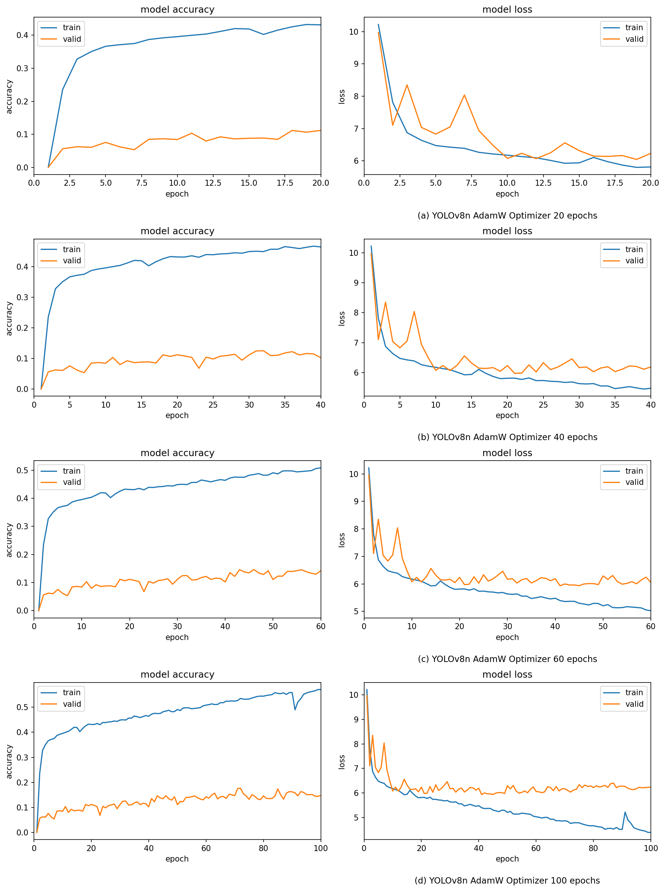

Results, measured honestly
Every number here is pulled from the real 100-epoch training run on an NVIDIA RTX 4050. The model works well on the dominant healthy class and shows a textbook overfitting gap driven by severe class imbalance.
Training dynamics
Detection metrics across 100 epochs
Validation mAP rises early then plateaus while precision swings as augmentation schedules change — the model learns the majority class quickly.
Validation metrics (0–1)
real results.csv · sampledTraining vs validation loss
box + cls + dfl lossReading the gapTraining loss keeps falling to ~4.4 while validation loss plateaus near 6.0 — the signature of overfitting on an imbalanced dataset.
Per-class performance
Where the model is strong — and where it isn't
Best-checkpoint score by class
Validation metrics by class
The dataset
315 unique aerial images · 80 : 10 : 10
Roughly 92% of all bounding-box labels are healthy — the root cause of the results above. bunchy_top has only three training boxes.
Train / validation / test split
images per labelDataset summary
Checkpoints
Table 13 — metrics by epoch checkpoint
Accuracy · Recall · Precision · F1
AdamW optimizerReference figure
Original training curves (Figure 12)

Figure 12. YOLOv8n AdamW accuracy and loss across all epoch checkpoints.